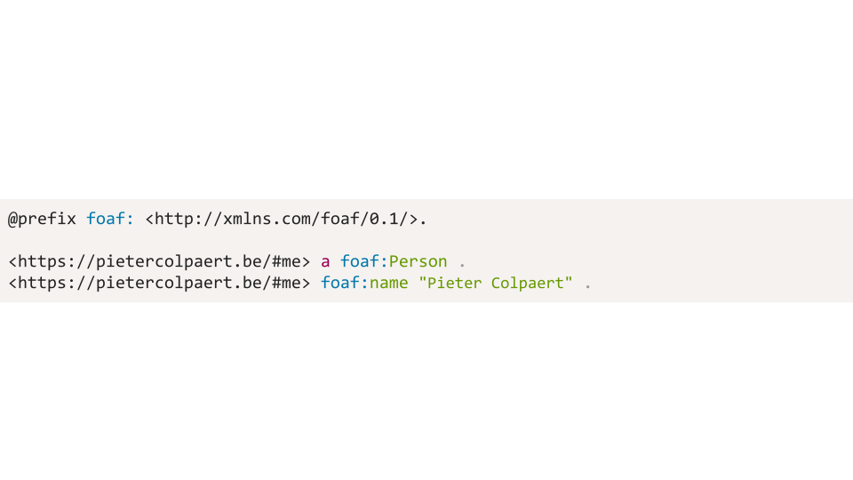
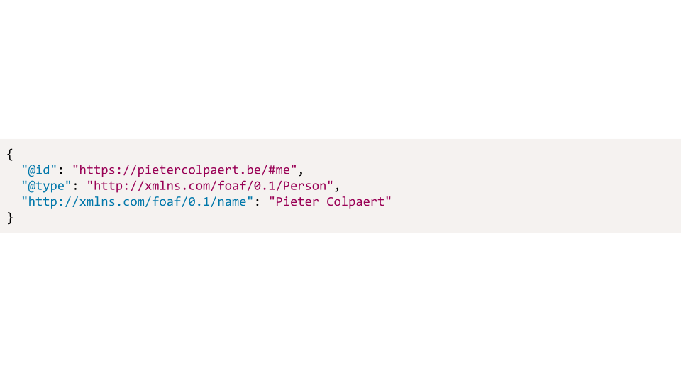
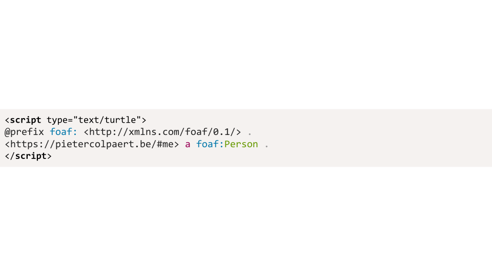
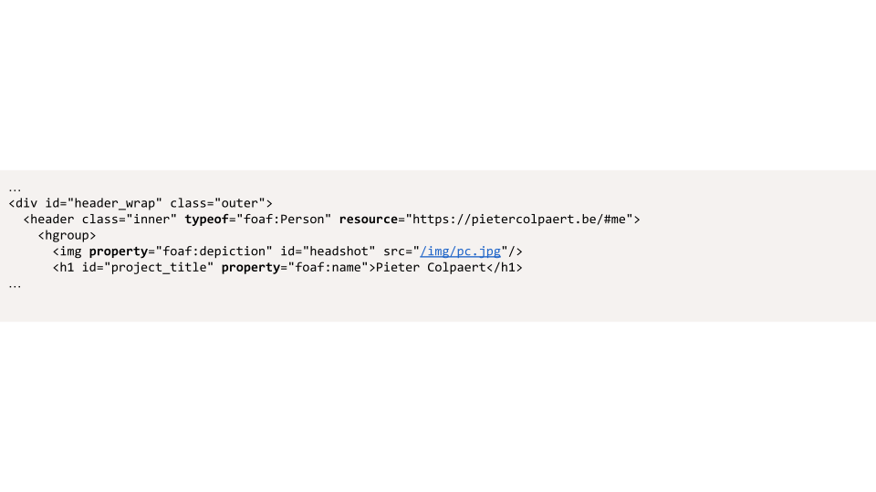

Data on the Web
-
Data makes sense in the context of its retrieval
- https://photoplatform.com/images/APIs/meta?imageid=191391932141.jpg
-
APIs carry the context of the data
-
this metadata is tied to the image at
https://photoplatform.com/images/APIs/image?imageid=191391932141.jpg
- Integration requires high effort
Linked Data on the Web
-
Linked Data links different pieces of information together using URIs:
-
alice.com/#me foaf:knows bob.com/#me .
bob.com/#me foaf:name "Bob" .
-
Linked Data can be dereferenced for context
-
The
http://xmlns.com/foaf/0.1/name property
describes the name of a Person.
it can be a turtle serialization

it can be a json-ld serialization

it can be embedded in a Web page as a script

or it can be embedded directly into the HTML as RDFa
